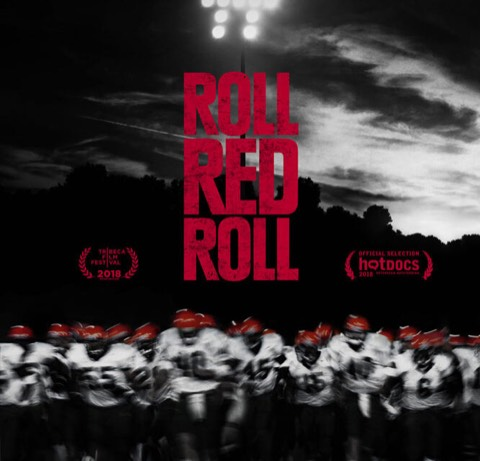

Conversation · Double Exposure 2018
Opening Conversation: Supreme Truth: From High School Halls to Hallowed Walls
Thursday, October 11, 2018 · 9:30 AM–10:45 AM · National Union Building
The Senate testimony of Brett Kavanaugh and his accuser, Christine Blasey Ford, has transfixed the nation, with Dr. Ford’s memories of sexual assault in high school dredging bitter memories for women across the country. This Opening Conversation explores high school as the incubator of impunity, protected by a culture of cruelty, in print and film. For Roll Red Roll, director Nancy Schwartzman went to Steubenville, Ohio, where a “boys will be boys” culture shunned a young rape victim whose assailants had circulated photos of her assault on social media—and who had the temerity to report her assault to police. For a series in The Washington Post, Elizabeth Bruenig returned to her high school in Arlington, Tex., to investigate the story of a classmate who was raped, and was essentially hounded from their school after reporting the assault to police. Moderating the conversation is Cheryl W. Thompson, investigative reporter for The Washington Post.
Films discussed

Roll Red RollNancy Schwartzman2018 · 80 min
Sources
Related sessions
- 2018EventDX Fledgling Fund Fellowship and DX Scholarship
- 2017 · Fri Oct 20 · 4:30 PMConversationAnatomy of a Serial: Closing Conversation with Ryan White and Jean Wehner, The KeepersRyan White, Jean Wehner, Gilbert Cruz
- 2019 · Fri Oct 11 · 9:30 AMPanel#MeToo 2.0Casey Frank, Emily Michot, Ricki Stern, Annie Sundberg, Janice Page
- 2019 · Fri Oct 11 · 9:45 AMPitchDocs in Progress PitchSara Barger, Amy Marquis, Jennifer Huang, Rodrigo Dorfman, Peter Eversoll, cai thomas, Serena Ajbani, Andrea Raby
- 2019 · Sat Oct 12 · 10:00 AMPitchCrossing BordersAnne Alvergue, Debra McClutchy, Maren Machles, Carrie Cochran, Jason Fitzroy Jeffers, Jess Swanson, Amanda Pike, Neela Banerjee, Nicole…
- 2019 · Fri Oct 11 · 9:30amPanel · DX²#MeTooAnnie Sundberg, Casey Frank, Emily Michot, Ricki Stern, Janice Page
- 2019 · Thu Oct 11 · 9:30amPanel · DX²Supreme Truth: From High School Halls to Hallowed WallsCheryl W. Thompson, Elizabeth Bruenig, Nancy Schwartzman
- 2015 · Fri Oct 2 · 1:30 PMConversationAlex Gibney, in Conversation with Franklin FoerFranklin Foer, Alex Gibney